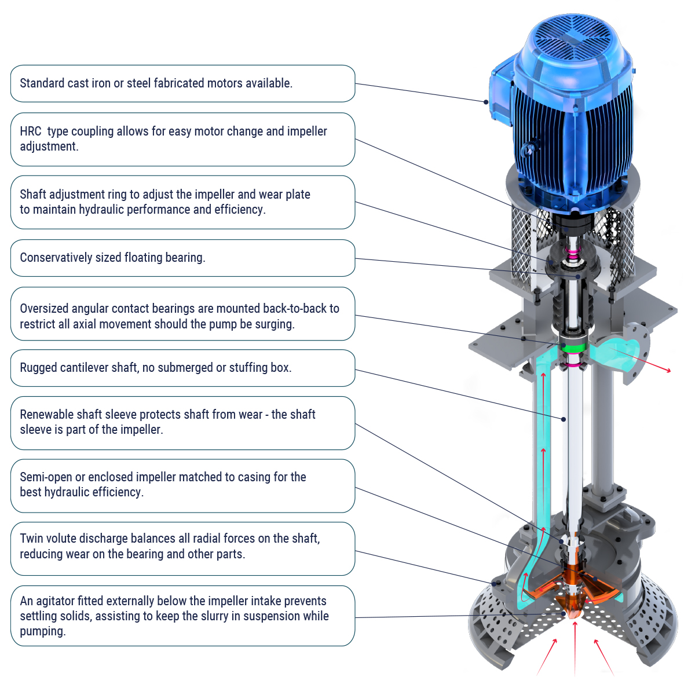

Hippo RangeЛинейка Hippo
The Hippo Vertical Spindle Bottom Suction Pump Range is used where solid particles have already settled out and need to be agitated before being pumped. The all-metal pump, with a high-chrome hydraulic end as standard, offers durability and high efficiency, and can be manufactured in duplex stainless steel alloys (e.g. CD4MCu) for acidic environments.
Вертикальный шпиндельный насос Hippo с нижним всасыванием применяется там, где твёрдые частицы в жидкости уже осели и требуют взмучивания перед откачкой. Цельнометаллическая конструкция со стандартной гидравлической частью из хромистого чугуна обеспечивает долговечность и высокую эффективность; доступно исполнение из дуплексной нержавеющей стали (например, CD4MCu) для кислотных сред.

Balanced hydraulic forces totally eliminate shaft deflection during partial loading.
Сбалансированные гидравлические силы полностью исключают прогиб вала при частичной загрузке.
To pump in explosive environments, all Hippo Submersible Pumps comply with IEC (SANS) 60079-0:2005 and IEC (SANS) 60079-1:2004.
Для работы во взрывоопасных средах все погружные насосы Hippo соответствуют стандартам IEC (SANS) 60079-0:2005 и IEC (SANS) 60079-1:2004.
The Hippo VB range excels in complex slurry and de-watering applications. Its compact design and high-pressure capability suit pits, pontoons, or temporary and fixed installations.
Насосы серии Hippo VB отлично подходят для сложных задач перекачки шлама и водоотлива. Компактная конструкция и способность работать при высоком давлении позволяют использовать их в карьерах, на понтонах, а также во временных и стационарных установках.
Our pump solutions can be custom made to your pumping requirements. Don't see a solution to your current pumping problem?
Наши насосные решения изготавливаются индивидуально под задачи заказчика. Не нашли готовое решение для своей задачи?